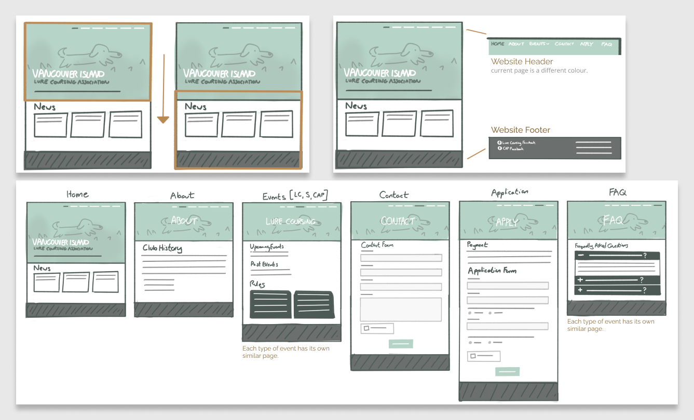
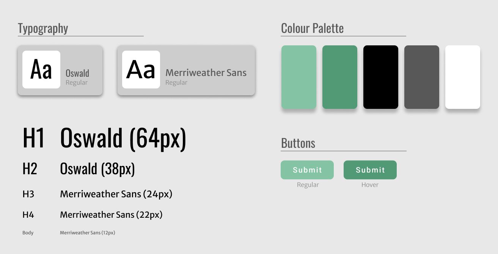
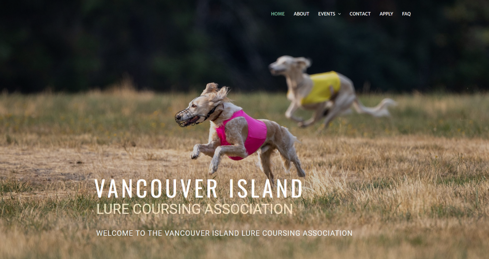

Website Development
Project information
- Project date: Fall 2023
- Team: Individual
- Role: UX/UI Designer, Programmer
About
The Vancouver Island Lure Coursing Association (VILCA) is a non-profit organization committed to promoting the sport of dog racing. Through their website, patrons can stay informed about current and past events as well as seamlessly connect with the association to discuss membership options.
As the website administrator since 2016, I've diligently managed content updates, ensuring the website remains a valuable resource for the community. After using the same web layout for the last decade, I was approached for a complete website overhaul. The goal was to introduce a fresh visual aesthetic that would allow staff to easily update the website themselves with limited computer expertise required.
My Role
Throughout this project I engaged in discussions with the clients to understand their desired features and preferences. With that information, I created mockups of web pages then implemented them into WordPress. Finally, I created and tested the web forms on the website so the association could properly be contacted.
Discussion of Site Changes
In the process of refining the website, extensive email correspondence enabled a thorough discussion of desired changes. Through this collaborative process, we streamlined ideas, such as proposing the substitution of a photo gallery webpage for a dynamic scrolling gallery header, enhancing visual appeal across pages.
I noticed the old website had a verbose header with many pages, so I first worked on rephrasing, merging, and reducing them while still adding new desired features such as an FAQ page.
Interface and Style Guide
When creating layouts for the webpages I focused on modernization and easy navigation, it was integral that the website would have an adaptive layout that would look nice on various screen sizes and devices.
Due to VILCA having no official colours I proposed to my client a green palette to complement the images supplied for the header images, mainly being pictures of dogs running through grassy track fields.
Website Development
The website itself was created using WordPress, allowing for seamless edits of webpages in the future. I also created a rough PDF guide with photos explaining the step-by-step process of how to make specific edits that staff would like to do on their own in the future.
Finally, I implemented contact and application forms using webforms with conditional logic for future association members to communicate with staff.
Reflection
While I’ve had experience in designing and implementing web design in the past, this project was the first website I’ve created using WordPress. I chose it because I knew the client wanted more control to make edits themselves in the future and with research and now recent experience, I believe that the WordPress interface is optimal for that.



{kind=link}
{kind=link}
{kind=link}
{kind=link}
{kind=link}